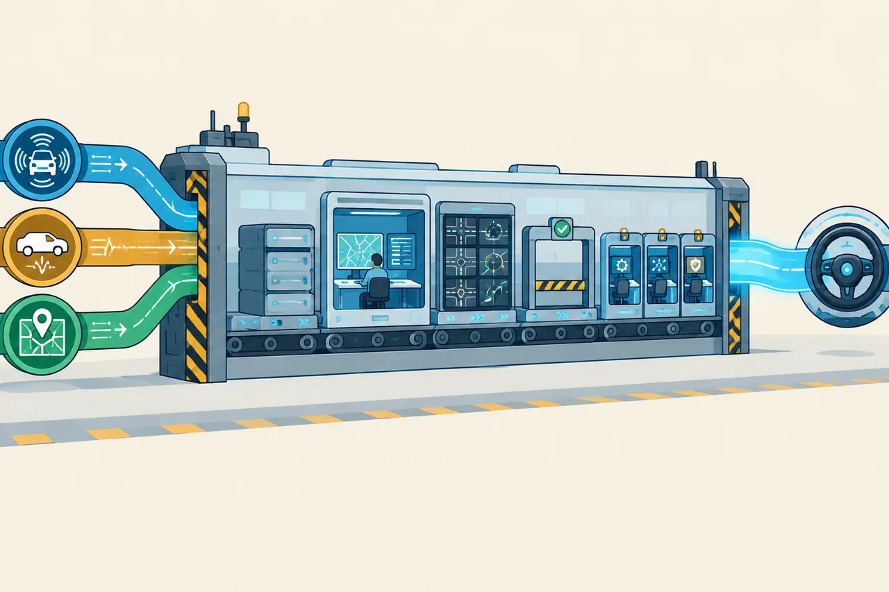

Unit 02 - Runtime Flow
Planning 一轮流程
从 Proc、LocalView、RunOnce、Frame 到 ADCTrajectory，建立一轮规划的主调用链。
学生自学版。本课只走主流程，不进入路径和速度算法细节。
1. 学习信息
- 预计用时：90～120 分钟。
- 难度：入门。
- 前置：第 01 课。
- 代码基线：
d53aa3da47a06a08e6d0cd175d5623a34fa0d6aa。
2. 学完本课应能做到
- 说出 Planning 从输入到输出的简化调用链。
- 区分
PlanningComponent、PlanningBase和Planner。 - 理解
LocalView和Frame的作用。 - 找到
ADCTrajectory的发布位置。 - 能用一张图解释一轮规划。
3. 一轮规划的总图
flowchart LR
A["上游输入"] --> B["PlanningComponent::Proc"]
B --> C["LocalView"]
C --> D["OnLanePlanning::RunOnce"]
D --> E["Frame"]
E --> F["TrafficDecider + Plan"]
F --> G["ADCTrajectory"]
G --> H["planning_writer_->Write"]
上游输入
-> PlanningComponent::Proc
-> LocalView
-> PlanningBase::RunOnce
-> InitFrame
-> TrafficDecider
-> Plan
-> ADCTrajectory
-> planning_writer_->Write
先记住一句话：
Proc 接数据并触发规划，RunOnce 组织一轮流程，Plan 负责真正计算。

| 文件 | 本课关注内容 |
|---|---|
modules/planning/planning_component/planning_component.cc |
Init、Proc、轨迹发布 |
modules/planning/planning_component/planning_base.h |
Planning 公共基类接口 |
modules/planning/planning_component/on_lane_planning.cc |
普通道路规划的一轮流程 |
modules/planning/planning_component/planning_base.cc |
Planner 插件加载 |
modules/planning/planning_base/common/local_view.h |
本轮输入快照 |
5. 源码阅读一：Proc 接数据
源码位置：
modules/planning/planning_component/planning_component.cc，约第 132 行。
// 源码位置：planning_component.cc，约第 132 行
bool PlanningComponent::Proc(
// prediction、chassis、localization 由 Cyber 组件框架传入
const std::shared_ptr<prediction::PredictionObstacles>& prediction_obstacles,
const std::shared_ptr<canbus::Chassis>& chassis,
const std::shared_ptr<localization::LocalizationEstimate>& localization_estimate) {
// prediction 是 Planning 的关键输入，空指针不能继续处理
ACHECK(prediction_obstacles != nullptr);
// 检查当前路线是否需要重新规划
CheckRerouting();
// 把三类基础输入保存到本轮 LocalView
local_view_.prediction_obstacles = prediction_obstacles;
local_view_.chassis = chassis;
local_view_.localization_estimate = localization_estimate;
// 创建一条空轨迹，作为本轮 RunOnce 的输出容器
ADCTrajectory adc_trajectory_pb;
// 真正进入 PlanningBase 的一轮规划
planning_base_->RunOnce(local_view_, &adc_trajectory_pb);
// 补充 header 和车辆位置
common::util::FillHeader(node_->Name(), &adc_trajectory_pb);
SetLocation(&adc_trajectory_pb);
// 将规划轨迹发布到 /apollo/planning
planning_writer_->Write(adc_trajectory_pb);
return true;
}
理解重点：
Proc是组件边界，不负责路径或速度算法。LocalView保存本轮输入快照。adc_trajectory_pb由RunOnce填充，再由 writer 发布。
6. 源码阅读二：RunOnce 组织流程
源码位置：
modules/planning/planning_component/on_lane_planning.cc，约第 232 行。
// 源码位置：on_lane_planning.cc，约第 232 行
void OnLanePlanning::RunOnce(const LocalView& local_view,
ADCTrajectory* const ptr_trajectory_pb) {
// 保存本轮输入，后面的任务可以通过成员变量访问
local_view_ = local_view;
// 用最新定位和底盘信息更新车辆状态
Status status = injector_->vehicle_state()->Update(
*local_view_.localization_estimate, *local_view_.chassis);
// 如果车辆状态无效，本轮不会继续正常规划
if (!status.ok() ||
!util::IsVehicleStateValid(injector_->vehicle_state()->vehicle_state())) {
// 生成安全停止轨迹，保证 Planning 仍然给控制模块一个结果
GenerateStopTrajectory(ptr_trajectory_pb);
return;
}
// 构造本轮 Frame。Frame 保存参考线、障碍物、决策等上下文
status = InitFrame(frame_num, stitching_trajectory.back(), vehicle_state);
// 在具体规划前执行交通规则
traffic_decider_.Execute(frame_.get(), &ref_line_info);
// 进入 Planner，进一步调用 Scenario、Stage 和 Task
status = Plan(start_timestamp, stitching_trajectory, ptr_trajectory_pb);
}
本课只看骨架，不展开 InitFrame、TrafficDecider 和 Plan 的内部细节。
7. 源码阅读三：Planner 插件加载
源码位置：
modules/planning/planning_component/planning_base.cc，约第 113 行。
// 源码位置：planning_base.cc，约第 113 行
void PlanningBase::LoadPlanner() {
// 默认使用公共道路规划器
std::string planner_name = "apollo::planning::PublicRoadPlanner";
// 如果配置中指定了其他规划器，就使用配置值
if ("" != config_.planner()) {
planner_name = config_.planner();
planner_name = ConfigUtil::GetFullPlanningClassName(planner_name);
}
// 通过插件管理器创建 Planner 基类指针
planner_ =
cyber::plugin_manager::PluginManager::Instance()->CreateInstance<Planner>(
planner_name);
}
阅读结论：
代码声明的是 Planner 基类指针
实际创建的是 PublicRoadPlanner 等具体插件
多态细节会在第 08 课学习。
8. 动手实验
使用搜索命令找到主流程：
rg -n "PlanningComponent::Proc|planning_base_->RunOnce|planning_writer_->Write" modules\planning\planning_component\planning_component.cc
rg -n "OnLanePlanning::RunOnce|InitFrame|traffic_decider_|Plan\(" modules\planning\planning_component\on_lane_planning.cc
rg -n "LoadPlanner|CreateInstance<Planner>" modules\planning\planning_component\planning_base.cc
手写调用图：
Proc
-> ________
-> ________
-> ________
-> ADCTrajectory
9. 常见错误
- 把
Proc当成算法函数。 - 把
LocalView和Frame当成同一个东西。 - 跳过
RunOnce，直接认为Proc会计算轨迹。 - 认为规划失败就不会输出结果。异常时仍可能有停止轨迹。
10. 自测题
Proc和RunOnce分别负责什么？LocalView保存什么？Frame保存什么？- 为什么
Proc创建的轨迹对象要传地址给RunOnce？ - 车辆状态无效时 Planning 会怎样处理？
- TrafficDecider 在
Plan前还是后执行？ - 默认 Planner 是什么？
- 轨迹在哪个函数中发布？
- 为什么
Proc不直接实现路径规划？ - 用一句话总结一轮 Planning。
11. 参考答案
Proc负责组件输入、调用 RunOnce 和发布输出；RunOnce负责组织一轮规划流程。- 本轮规划使用的输入快照，例如 prediction、chassis、localization 等。
- 本轮规划的上下文，包括车辆状态、参考线、障碍物、决策和任务结果。
RunOnce需要直接修改这个对象，把规划结果写入其中。- 生成停止轨迹或安全降级结果，避免控制模块没有轨迹可用。
- 在
Plan之前执行。 apollo::planning::PublicRoadPlanner。PlanningComponent::Proc中的planning_writer_->Write(...)。- 因为组件负责输入输出和框架连接，具体算法由 Planner、Scenario 和 Task 分担。
- 接收上游输入，构造本轮 Frame，执行规则和规划任务，最后发布 ADCTrajectory。
12. 过关检查
- 能画出
Proc -> RunOnce -> Plan -> ADCTrajectory。 - 能解释 LocalView 和 Frame 的区别。
- 能找到默认 Planner 的加载位置。
- 十道题至少答对八道。
13. 下一课衔接
下一课把大流程拆成三层：
Scenario 遇到什么情况
Stage 进行到哪一步
Task 具体做什么